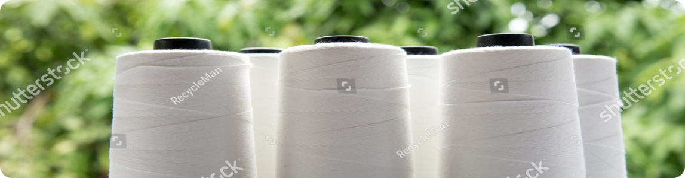

Fibers & Yarns
At FIBERS & YARNS, the production of Chen brand textiles is a harmonious symphony of expertise and innovation. Our journey begins with the careful selection of raw materials, where only the finest and most sustainable fibers are chosen.
These fibers then undergo a meticulous process of spinning, blending, and refining, guided by the hands of skilled artisans and the precision of cutting-edge machinery. Throughout every stage, quality control takes center stage, ensuring that each thread meets the highest standards of durability, texture, and color vibrancy. Our commitment to eco-conscious practices is woven into our production, from responsible sourcing to efficient manufacturing techniques. The result is a collection of fibers and yarns that embody not just exceptional craftsmanship, but a dedication to the art of textile production that stands the test of time.
Applications
Polyester Staple Fiber (PSF) stands as a versatile and essential component in the realm of textiles. Derived from polyester, this finely crafted fiber exhibits remarkable durability and resilience, making it a favored choice for a wide array of applications.
- Above PSF products are suitable to produce yarn, either with 100% Polyester or in Cotton/Viscose Blends.
- Yarn can be produced through Ring Spinning, OE Spinning & MVS for Weaving or Knitting applications.
- Short Cut fibre is a Reinforcing material for Cement Pre-casts, Asbestos Cement sheets, Filter Paper, Paper & Automotive Battery Applications.
| Products | Denier | Cut length (mm) | Cross Section |
|---|---|---|---|
| Semidull | 1.2 | 32, 38, 44, 51 | Circular |
| 1.4 | |||
| OB | 1.2 | ||
| 1.4 | |||
| Short Cut | 1.2 | 6mm, 12mm | Circular |
News
Reliance Industries in branding alliance with Tamil Nadu firm for Recron fibre brand
Reliance Industries in branding alliance with Tamil Nadu firm for Recron fibre brand